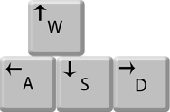

Welcome to the newest survival game of the year. Your goal is to survive as long as possible, all the while gathering swords to decrease your pursuers speed.
You can manuver using either the WASD keys for their respective directions or the Arrow keys.

You will receive 2 points for every second you are alive and 10 points for every sword you collect.